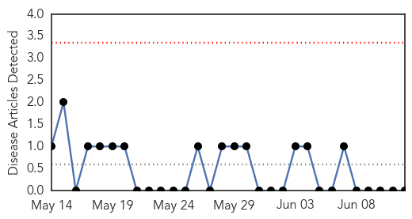
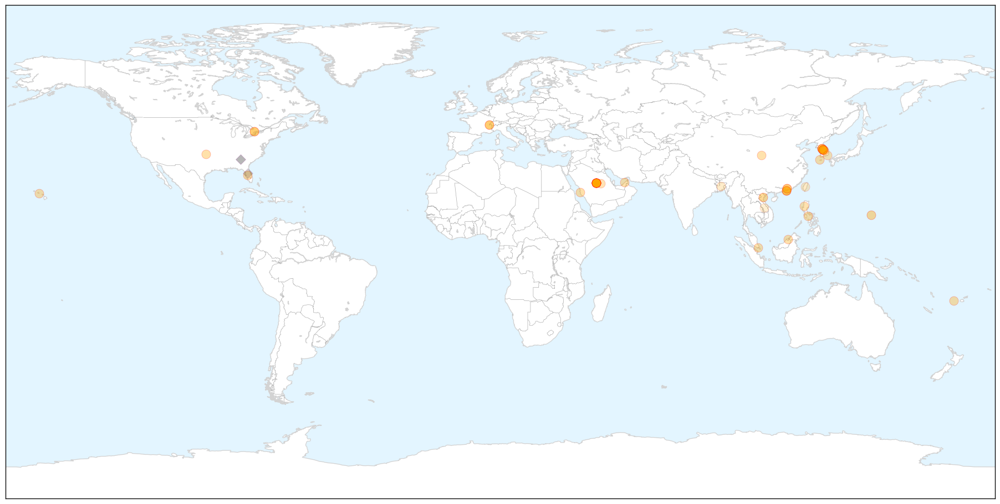

Mold/Fungal
30-Day Web Trend
0 alerts, 0 warnings

30-Day Twitter Trend
0 alerts, 0 warnings

Article Locations


Article Confidences

Top Articles:
-
No articles found for Jun 12, 2015
Top Tweets:
-
No tweets found for Jun 12, 2015
MERS
30-Day Web Trend
22 alerts, 2 warnings

30-Day Twitter Trend
6 alerts, 0 warnings

Article Locations

X

Article Confidences

Top Articles:
- 1.000
- What you should know about MERS, the mystery disease that has South Korea on edge
- 1.000
- South Korea Reports 11th Death from MERS
- 1.000
- What You Need to Know About Middle East Respiratory Syndrome
- 1.000
- CDC warns doctors to screen patients for MERS virus
- 1.000
- 10 Essential Facts About MERS
- 1.000
- MERS outbreak in South Korea can probably be beat: WHO
- 1.000
- MERS closes 2 hospitals
- 0.999
- South Korea reports 14 new MERS cases, taking total to 122
- 0.999
- South Korea seals two Mers hospitals as officials say worst may be over, East Asia News & Top Stories
- 0.999
- CDC Issues Advisory to US Hospitals over South Korea MERS Outbreak
- 0.999
- Breathe Easy: Sultanate is MERS-Free
- 0.998
- S Korea MERS epidemic: worst may be over
- 0.998
- South Korea says 11th patient has died of Mers infection as two hospitals sealed off
- 0.998
- S. Korea, WHO experts downplay pandemic potential of MERS
- 0.998
- Fiji Times Online
- 0.998
- South Korea MERS outbreak shows signs of slowing
- 0.998
- Kingdom, South Korea see no MERS letup
- 0.998
- S. Korea, WHO experts downplay pandemic potential of MERS
- 0.998
- Northern Voices Online USA MERS outbreak threat
- 0.997
- MERS—the latest threat to global health security
- 0.997
- Korea's MERS outbreak a wake-up call: WHO
- 0.997
- South Korea's MERS outbreak should be a wake-up call for the world: WHO expert
- 0.997
- South Korea's MERS outbreak should be wake-up call, WHO expert says
- 0.997
- South Korea's MERS outbreak yet another wake-up call: WHO
- 0.997
- U.S. hospitals warned to be on lookout for MERS cases
- 0.997
- South Korea’s MERS outbreak should be a wake-up call for the world: WHO expert
- 0.995
- U.S. hospitals warned to be on lookout for MERS cases
- 0.994
- No MERS cases known in Brunei, news, Health News, AsiaOne YourHealth
- 0.994
- CDC warns about South Korean MERS outbreak
- 0.994
- MERS infections abate in S.Korea with 4 more cases - Xinhua
- 0.991
- Expert answers questions about MERS
- 0.988
- Korean Airlines and Asiana flights should be sterilized
- 0.985
- China orders airlines to sterilize planes flying from S. Korea
- 0.984
- No MERS cases known in Brunei
- 0.981
- China's aviation regulator orders enhanced MERS control
- 0.980
- China orders airlines to sterilize planes flying from S. Korea
- 0.978
- Juvenile camels 'key source' of Mers
- 0.976
- Juvenile camels key source of Mers - Click Ittefaq
- 0.972
- MERS could dent travel to Korea
- 0.967
- SKorean MERS deaths rise amid signs of outbreak easing
- 0.967
- ‘Doctor Shopping’ Helped Spread Deadly MERS Virus
- 0.964
- Travelers avoid South Korea amid MERS scare, but will it last?
- 0.949
- PH postpones Independence Day celebration in South Korea
- 0.885
- Riyadh, Seoul to cooperate on fighting MERS virus
- 0.869
- KUNA : Japan sends expert to MERS-hit S. Korea
- 0.741
- The MERS Scare: an On-the-Ground Report From Korea
- 0.682
- Sample Test of S. Korean death in Vietnam shows negative to MERS - Xinhua
- 0.677
- Sample Test of S. Korean death in Vietnam shows negative to MERS
- 0.661
- Korean cosmetics lose US$5.4B due to MERS
- 0.619
- June 11 Asia-Pacific news summary at 1000 GMT -
Showing top 50 articles...
Top Tweets:
- 0.845
- RT: Updated info guidelines for eval of patients for Middle East Respiratory Syndrome Coronavirus (MERS-CoV) infection: http…
- 0.845
- RT: Updated info guidelines for eval of patients for Middle East Respiratory Syndrome Coronavirus (MERS-CoV) infection: http…
- 0.658
- Updated info guidelines for eval of patients for Middle East Respiratory Syndrome Coronavirus (MERS-CoV) infection: http://t.co/IZv6kwUv15
- 0.533
- RT: S. Korea-Gov announces 12 new coronavirus MERS cases & 4th death today-total cases=138total deaths=14 -June 12 https:/…